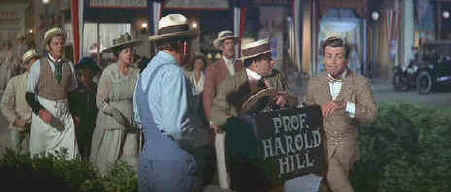

Warner/1968/122m/WS 2.35
Preston is Professor Henry Hill, a combination con man/salesman, who foists his wares on unsuspecting small towns with promises that are never fulfilled, at least not until he gets to River City. In this staid Iowa town the most excitement seems to be generated by the reading habits of the mayor's daughter. Her taste in boy friends provide further sparks, but life limps along from July 4th celebration to July 4th celebration with little of no alteration to the pattern of fireworks. That is until Hill seizes the collective collar of the town to inspire their interest in an all boys marching brass band. And it all starts from, Yes Sir, There's trouble right here in River City.
|  |
Hill describes the trouble in River City©Warner |
So many of the musical
elements of The Music Man are a sheer delight. Preston of course is perfection,
mostly sing talking his songs. But the harmony of The Buffalo Bills is delightful and
their interaction with Professor Hill never fails to bring a smile to my face. The opening
train number is quite amazing in its syncopated dexterity. And the ladies auxiliary
bursting with song like so many chickens is terrific.
Morton De Costa’s direction is transparently theatrical, but
it doesn’t matter a whit. The high energy lyrics and staging of Meredith
Wilson’s stage vision translates to film with ease.
Playing alongside Preston are Shirley Jones as Marion the
librarian. If anything, Jones is under-utilized musically. Young Ronnie Howard is adorable
as her little brother Winthrop and Hermione Gingold is a riot as Eulalie Shinn, the
mayor's wife and the accepted leader of the ladies. Buddy Hackett adds additional humor as
Hill's old fried Marcellus Washburn.
The Music Man seems to have an inconsistency in sharpness
enhancement. Some scenes are definitely ringing at the images edges too much. There’s
even a hint of mustache on Shirley Jones and Pert Kelton along their lips at the
transition from bright lipstick to skin. Other scenes appear very sharp while defying the
enhancement scenario. Despite the sharpness issue, there’s no noticeable aliasing or
interline flicker on straight edges. There is some pastiness and an overall homogenized
look to skin tones. There is lots of vitality in the color scheme. The intentionally
artificial Norman Rockwell portrait of small town life comes across very well. The music
is The Music Man and this DVD does a splendid job in replicating the
excitement and energy of this film adaptation of the Broadway musical. The Music Man
special editon includes a new documentary about the making of the film and a short
introduction by star Shirley Jones.